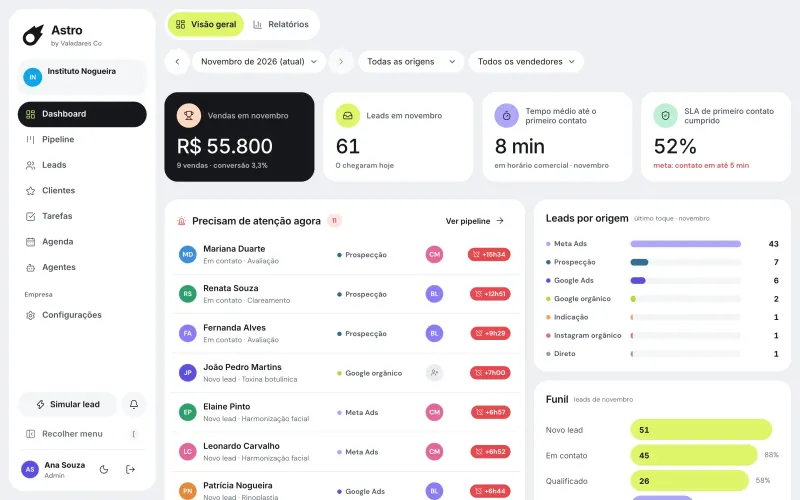

Raio-X da Captação
Uma página sobre como sua clínica aparece e atende hoje, com 3 ajustes para esta semana. Se quiser, o nosso especialista explica tudo em 20 minutos.
- Google, Maps e avaliações
- Resposta no WhatsApp
- Site e anúncios
A gente traz paciente particular pela internet e prepara sua recepção para nenhum contato esfriar. Todo mês você vê quantos viraram consulta.
Não adianta trazer mais paciente se o atendimento não dá conta. Por isso a gente cuida dos dois juntos, com um time só.
Sua pele em boas mãos
Origem registradaAnúncio no Instagram
Olá! Quero agendar uma avaliação.
RecepçãoOi, Ana! Tenho quinta às 15h. Posso reservar?
Respondido em 1 minQui, 15h
Acompanhe a Ana, do primeiro
anúncio até a consulta de retorno
A Ana procura há meses um tratamento para manchas. Um anúncio da sua clínica aparece no Instagram falando exatamente disso.
Em uma página, a gente mostra como sua clínica aparece e atende para quem procura o tratamento. E fecha com 3 ajustes que a sua equipe consegue fazer nesta semana. É de graça e é seu, fechando ou não.
Cada clínica tem um tamanho. Por isso o valor
vem depois do Raio-X, numa proposta fechada.
Uma página sobre como sua clínica aparece e atende hoje, com 3 ajustes para esta semana. Se quiser, o nosso especialista explica tudo em 20 minutos.
Para a clínica que depende muito de indicação, ou que anuncia sem saber o que volta.
Sem mexer na sua agência, a gente faz o paciente que já passou pela clínica voltar, e nenhum orçamento ficar esquecido.
Todos começam pelo Raio-X. Pedir o da minha clínica
Diagnóstico antes da prescrição.
Número antes da opinião.
Uma página para cada tratamento, o Astro no ar e a recepção treinada.
Você já vê: de onde vem cada contatoAnúncios no Meta e no Google para quem procura o tratamento na sua região.
Você já vê: quantos contatos viraram consultaAjustes com base em quem agendou e veio. A verba vai para o que traz paciente.
Você já vê: quanto custou cada pacienteTodo mês, um relatório simples: quanto investiu, quantos contatos chegaram, quantos viraram consulta e procedimento.
O Astro é o sistema que a gente implanta na sua recepção: avisa quem chegou e lembra de quem precisa de retorno. A gente instala e treina a equipe.

Anúncio e treinamento da recepção juntos. Passou de 480 contatos no primeiro mês, com custo por agendamento bem baixo.
Com anúncio no Google e o perfil da clínica bem cuidado, chegou ao primeiro lugar nas buscas da região e voltou a ter a agenda estável.
Todo mês, o relatório mostra os contatos, as consultas e de onde veio cada paciente. Sem print de gerenciador.
Os dois primeiros são trabalhos do nosso especialista antes da assessoria. Não citamos nome de médico nem prometemos resultado: cada clínica é uma clínica.
O que todo dono de clínica pergunta antes de começar.
Uma página sobre a sua clínica: como ela aparece no Google, o que acontece quando alguém chama no WhatsApp, como está o site e quem anuncia na sua região. Fecha com 3 ajustes que a equipe consegue fazer nesta semana. É grátis e é seu, fechando ou não.
Não. O Raio-X serve até para conferir o trabalho dela. E o Retorno de Pacientes cuida do que acontece depois que o contato chega, e do paciente que já é seu, sem mexer na agência.
Acontece muito. Em geral o anúncio até trazia contato, mas ele se perdia no atendimento, ou o Meta e o Google aprendiam a trazer curioso em vez de paciente. Por isso a gente cuida do anúncio e da recepção juntos.
Não. Ninguém sério promete resultado em marketing, e as regras do CFM e do CFO não permitem. O que a gente faz é medir tudo e mostrar todo mês quantos contatos viraram consulta, para você decidir com número na mão.
Depende do tamanho da clínica. O Raio-X é grátis. Depois dele, se fizer sentido, você recebe uma proposta fechada. A verba dos anúncios é à parte e vai direto para o Meta e o Google.
Funciona melhor em clínicas particulares com tratamento de valor médio a alto e paciente que volta: dermatologia, cirurgia plástica, estética, odontologia e oftalmologia. No Raio-X a gente diz com franqueza se faz sentido para você.
Por isso a gente implanta junto e treina a recepção. O Astro tira tarefa em vez de dar mais: avisa quem chegou e lembra de quem precisa de retorno.
Não. A atendente de IA é opcional. Ela responde as perguntas de sempre fora do horário e passa a conversa para a recepção com um resumo. Sua equipe acompanha tudo e assume quando quiser.
Indicação é ótima e mostra que o trabalho é bom, mas não tem dia para chegar. O anúncio ajuda a agenda a não depender só dela, e o lembrete de retorno faz o paciente voltar e indicar mais.
Pouco. A gente toca a operação. Todo mês você recebe um relatório simples: quanto investiu, quantos contatos chegaram, quantos viraram consulta e de onde veio cada paciente.
Comece pelo Raio-X da Captação: uma página sobre onde sua clínica está perdendo paciente hoje. Grátis, fechando ou não.
Receber o Raio-X da minha clínica